Creating Presets
Objectives:
- To be able to comprehend presets concept on OpenStreetMap
- To be able to comprehend XML format to create presets on OpenStreetMap
- To be able to create a customized presets on OpenStreetMap
- To be able to comprehend presets elements
As explained before, OpenStreetMap is a free, open, participatory map of the whole world. This means that the use of OpenStreetMap can be very distinctive. The more distinct the mapping objectives are, the more diverse the information are. The needs of various information made OpenStreetMap user come to an agreement to standardize the information added into OpenStreetMap. This standardized information is called Tag. To learn more about Tag, please refer to OpenStreetMap Model Data module.
From the standardized information agreed by OpenStreetMap contributors, platforms are made to help users finding the right tag such as Map Features wikipedia page, Indonesian OSM Objects Reference, and Tag Info. OpenStreetMap community then made a series of fields on Java OpenStreetMap (JOSM) to add general information to the mapped objects to help OpenStreetMap contributors easily add information as needed. This series of information is called presets.
I. OpenStreetMap Presets Concept
What is Presets?
Presets is information represented by at least one Tag, a combination of particular key dan value, helping OSM users to map objects on OpenStreetMap using JOSM or iD Editor.
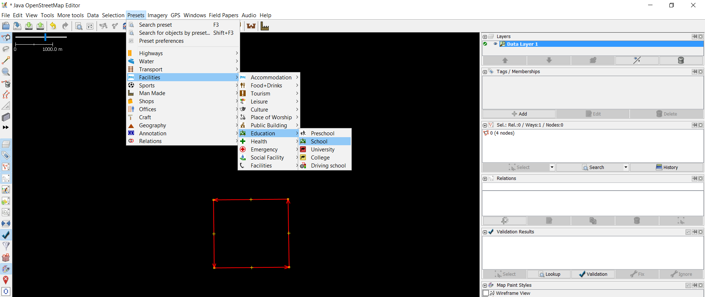
Picture above is an example of adding presets for a school object. If you want to add more detailed information for that school object, your JOSM will look like this:
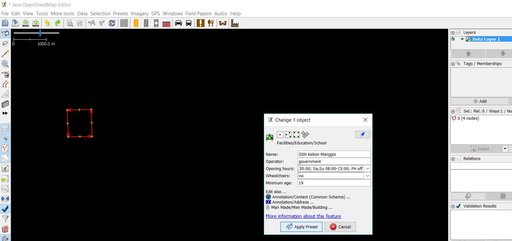
Customizing Preset on JOSM
As explained before, OpenStreetMap community already made general presets that will be available by default when installing JOSM. However, presets provided on JOSM runs short of information specifically for Indonesian OpenStreetMap user:
- Information field for particular objects is lacking and is not suitable for specific mapping activity
- Information field available most often is not used for Indonesian object
- Choices for the information is limited and is not as needed for mapping activity in Indonesia
- Presets label is presented in English, making it quite difficult to add information for Indonesian
- Some of the objects available on default presets do not exist in Indonesia
To solve these problems, you can create customized presets based on your needs. By creating your own presets, you can customize the information you want to add to the objects and the language used for your presets presentation.
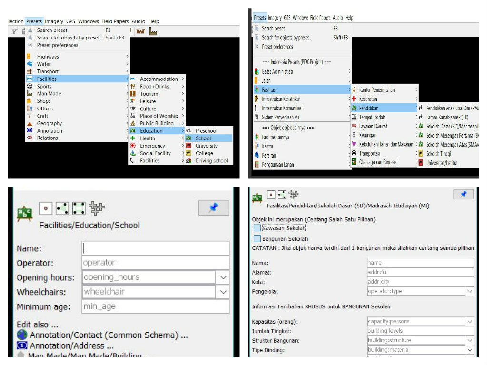
II. Using XML for Creating Presets
Before creating presets, you should learn about the markup language used for creating presets first. Customized presets for JOSM is created using Extensible Markup Language or XML format. XML file contains elements, elements can contain sub-elements and sub-elements can contain sub-sub-elements.
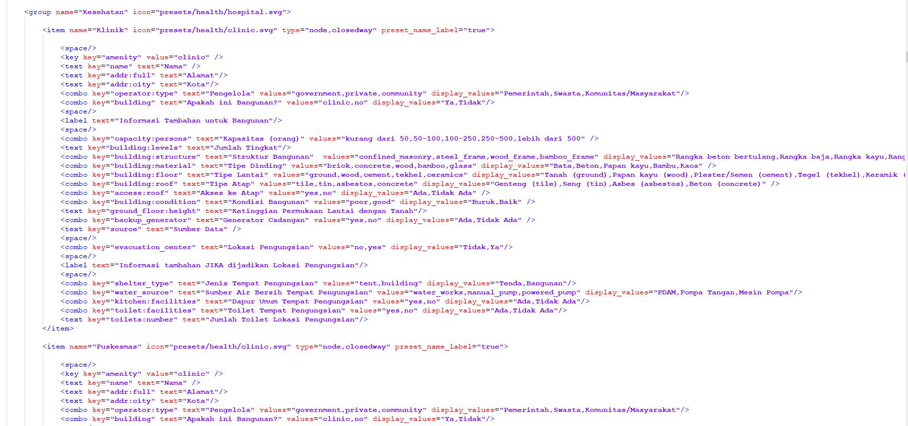
This is the hierarchy of XML elements that is used for creating presets:
XML: Root Element –> Element and Sub-Element –> Tag –> Attribute
- Root element: the outermost element of an XML file; root element defines information inside the XML file. Root element for presets: < presets > … element.. < /presets >
- Element: everything (like information and tag) from (including) the element's start tag to (including) the element's end tag, for example < item > ..tag.. < /item > , < group > ..tag.. < /group >
- Tag: information contained in element and sub-element. Information is filled with attribute. Tag is opened with <> and closed with </>, for example < item > ..attribute < /item >
- Attribute: Specific information in a tag, for example landuse=“orchard”
This is an example of a presets XML file:
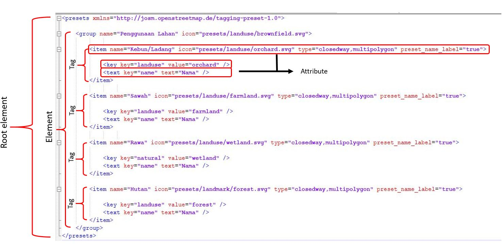
III. Creating Customized Presets
To be able to create your own presets, there are several things you need to prepare first. You need to install additional software to create XML file. One of the software to create XML file is Notepad ++ which can be downloaded at https://notepad-plus-plus.org/download/v7.6.3.html. After downloading it, install the software. You also need to learn about the principle of making OSM presets, like:
- The object type you want to map. As explained in Data Model OpenStreetMap module, that there are three types of mapped objects in OpenStreetMap: point (nodes), line (ways), and area (closedway). For example, if the mapped object is road, then the object type you write on your presets is ways, not other type.
- The standardized key and value for mapped objects on OpenStreetMap. You can refer to Map Features on Wikipedia Page, OSM Indonesia Object Reference and Tag Info. To know more about key and value, please refer to Data Model OpenStreetMap module.
- Key dan value should be written in English, but for the presets label can be written in Bahasa.
Presets Elements
If you have understood the principle of creating presets, you also need to learn about the elements of presets. Some of them are:
- Element key key
Structure : <key key="......" value="......" />
This is a mandatory key that defines main information for an object, even though other information is left empty. For example, if in your presets, you want to emphasize that the objects is a school, then insert this into your XML presets:
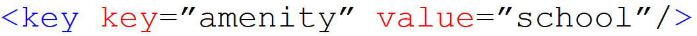
- Element text key
Structure : <text key="......" text="......" />
This element defines object's information in form-filling format. This element is usually used to fill object’s name and address. For example, if you want to add object’s name and address information, insert this into your presets XML:
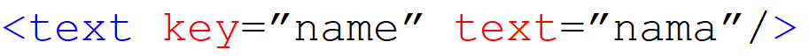
Additional word “text” in the example above defines the label displayed on your JOSM presets. The “text” part can be filled with the label you want to display, in this example the “text” part is filled with name in Bahasa Indonesia which is “nama”. This is the presets appearance of the example text key above:
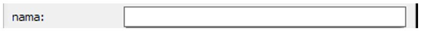
- Element combo key
Structure : <combo key="......" text="......" values="...,...,..." display_values="...,...,..." />
This element defines object's information in dropdown list format. This element is usually used for information like roof type or building materials type. If you want to collect such information, insert this in your XML presets:
Element shown above is used to add information about the building materials so that the used key is “building:materials”. The “text” is used for displayed label for the key, it can be in Bahasa Indonesia or any language you want.
The “value” is typed as “values” since there is more than one choice of information (tag’s value) for the dropdown list. The “display_values” is used to display the label for the choices that can be written in Bahasa Indonesia. This picture is the presets appearance of the combo key example above:
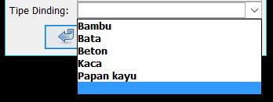
- Element multiselect key
<multiselect key="......" text="......" values="...;...;...;..." display_values="..;..;..;.." />
This element defines object’s information in multiselect format. This element is kind of similar to combo key. The difference is you can choose more than one choices with this multiselect key. This element is usually used for information where more than one answer is possible such as water source of a building. This is how to use multiselect key in XML presets:
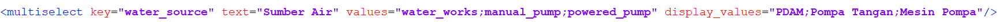
The multiselect key structure is very similar with combo key structure. The differences are the key ‘multiselect’ is used instead of key ‘combo’ and the separator used in between values is semicolon (;) while key and value labels can be written in Bahasa Indonesia, using ‘text’ and ‘display_values’. This picture is the presets appearance of multiselect key example above:
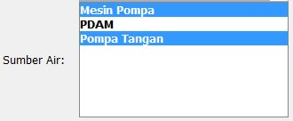
- Element check key
<check key="......" text="......" value_on="yes" value_off="no" default="......" />
This element is used for information filling in checkbox format. This element is usually used for a yes-no information (closed question) such as roof access and one way road. If you want to add such information, you can insert this into your preset:
The check key structure uses value_on and value_off format. Each value (on/off) can be adjusted to each tag’s value for example value_on has the value ‘yes’, when the information checkbox is checked and value_off has the value ‘no’, when the information checkbox is unchecked. So, when a checkmark given in the checkbox, the key will have the value ‘yes’. However, when the checkbox is left unchecked, the information still will be added in Tags/Memberships Windows on JOSM and the information will have the value ‘no’ since the default settings is ‘off’. This picture is the presets appearance of check key example before:
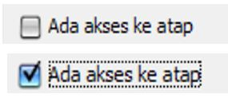
Adding Icons for Presets
Yo can also add icons for your presets. Icons are used to represent the objects in the presets. Icons also make your preset look more interesting. To add icons for your presets, insert ‘icon=the path to your icon’ and data type in the element like the example below:
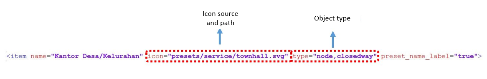
If you want to use icon available on JOSM, you can see it at https://josm.openstreetmap.de/browser/josm/trunk/images/presets . You can use other set of icons you made or icons on your computer/laptop that you got from another source. However, when someone makes a copy of your preset or when you share the presets to others, the icon won’t show up since you use offline icon that’s only stored in your computer/laptop. Here is the example for offline icon path:
C:\Users\(your computer/laptop name)\Desktop\icon presets\building.png
You can download HOT-PDC InAWARE presets as reference at bit.ly/presetshotpdcid
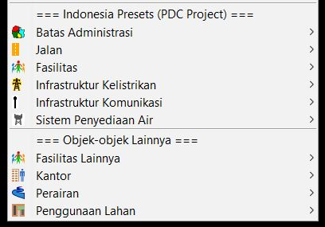
SUMMARY
Now you have learned how to create customized presets. Customized presets can be very helpful in collecting specific information for survey. It will be useful to learn presets creation to help in collecting specific information for survey. Using customized presets can also enrich the information of the mapped objects.